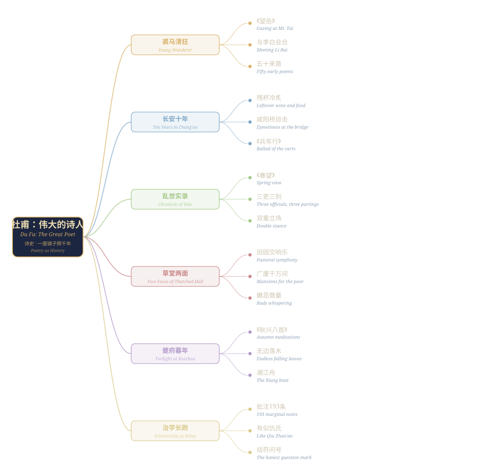

杜甫：伟大的诗人
〇 · 书籍信息
基本信息
| 书名 | 「伟大的诗人」是套装的判词——两册各司其职：《杜甫传》讲人生（冯至，人民文学 1952 年初版、1980 年增订），《杜甫诗选注》讲作品（萧涤非，1979 年初版、增补本收入自存本批注 193 条）——生平与作品互证，一部「一站式」杜甫 |
|---|---|
| 传记作者 | 冯至——诗人写诗人：十三章按行踪推进（家世出身 → 吴越齐赵漫游 → 与李白会合 → 长安十年 → 流亡 → 成都草堂 → 夔府孤城 → 悲剧的结局），另附「纪念伟大的诗人杜甫」「论杜诗和它的遭遇」等论文 |
| 选注者 | 萧涤非（1906—1991）——杜甫研究泰斗、主编《杜甫全集校注》：增补本最大的价值是「先生自存《杜甫诗选注》扉页批注」193 条——耄耋之年仍矻矻以求，「有似仇氏」（仇兆鳌） |
| 一句话 | 冯至说杜甫的诗像一面镜子：照映的不是浮光掠影，而是转变过程中带有关键性的重要事件——诗人把自己的一生，写成了安史之乱的实录。 |
一 · 核心主题总览
这套书里的四组母题：① 诗史
冯至论杜诗的功能：「当唐玄宗在天宝年间对外进行掠夺性的战争，连遭失败，人民负担着过重的赋税与兵役」时，杜甫写下《兵车行》——「《兵车行》是对于唐玄宗君臣不顾农业生产，不管人民死活，一味在边疆发动战争的抗议」；他在《前出塞》里也提出诘问，「君已富土境，开边一何多？」——诗不只是抒情，是新闻、是档案、是抗议书。
② 沉郁顿挫的一年
759 年被冯至反复标记：「759 年是他最艰苦的一年，可是他这一年的创作，尤其是『三吏』『三别』，以及陇右的一部分诗，却达到最高的成就。这年他四十八岁」——「他这半年内的诗流传下来的约有一百二十首，若是把这些诗从全集中抽出，它们就可以独自成为一集」——苦难与杰作的比例，在杜甫身上是正相关的：生活越糟，诗越好，这不是奖赏，是表达的需要被逼到了极限。
③ 草堂的双面
成都草堂在冯至笔下不是田园牧歌：「我们读着这些诗句，好像听田园交响乐，有时到了极细微极轻盈的段落，细微到『嫩蕊商量细细开』，轻盈到……」——「但这些诗句只反映着杜甫草堂生活的一方面」——另一面是「他穷困到这地步，但他的诗却得到意外的发扬」：草堂是避难所也是观察站，安逸从未取消他对乱世的注视。
④ 夔府与暮年
夔州两年是艺术的结账期：「杜甫在这时有了充裕的时间回忆他的青年时代」——《秋兴八首》《登高》诞生于此：「风急天高猿啸哀，渚清沙白鸟飞回。无边落木萧萧下，不尽长江滚滚来。万里悲秋常作客，百年多病独登台」——但晚年更大的底色是漂泊：「这是一个多么可怜的形象：写过《赴奉先县咏怀》，写过《北征》，写过『三吏』『三别』……从长安时起就尝尽残杯冷炙的辛酸，如今又沦落」——伟大与困顿同框，是杜甫一生的构图。
二 · 第一段 成长与漫游 —— 青年的裘马—— 望岳 · 李白 · 齐赵 ——
「放荡齐赵间」
青年的杜甫是另一种人：「放荡齐赵间，裘马颇清狂。」（《壮游》）——吴越与齐赵的漫游年代，他登泰山写下《望岳》：「岱宗夫如何？齐鲁青未了」——冯至提请注意：「他四十岁以前的诗存留下来的并不多，一共不过五十来首，其中固然有不少富有创造性的诗句，但歌咏的对象不外乎个人的遭遇和自然界的美丽」——伟大的诗人不是从天而降的：四十岁前的杜甫，还只是一个才华横溢的漫游者。
◆ 语言学习 · 概念 · 漫游时代
| 裘马清狂 | 青年杜甫的自画像：裘衣骏马的盛世公子 |
|---|---|
| 《望岳》 | 存诗中最早的名篇：会当凌绝顶 |
| 与李白会合 | 第四章节题：天宝三载的双星相遇 |
| 五十来首 | 四十岁前的存诗量：伟大的慢热 |
句型 ｜ 「歌咏的对象不外乎个人的遭遇和自然界的美丽。」——传记家最冷静的一笔：伟大不是起点而是过程——杜甫的伟大，是长安十年后一格一格挣来的。
长安十年
第五章「长安十年」是人生的分水岭：「杜甫穷困到这地步」的「残杯冷炙」岁月——朝扣富儿门，暮随肥马尘；理想从「致君尧舜上」被现实磨成生存；「长安北渭水上的咸阳桥连接着通往西域的大道，统治者用暴力征发来的兵士开往边疆都要从这里经过。杜甫曾经亲自看到过士兵们出发时的情景，他们的父母妻子拦道牵衣」——《兵车行》正是这目击的产物：诗人的眼睛开始向外看，看向桥上被征发的人流——「四十岁以前……歌咏的对象不外乎个人」，四十岁以后，对象是时代。
◆ 语言学习 · 概念 · 目击之诗
| 残杯冷炙 | 长安十年的日常：寄食权门的辛酸 |
|---|---|
| 咸阳桥 | 征兵的目击现场：《兵车行》的取景地 |
| 拦道牵衣 | 亲人送征的场景：诗的镜头语言 |
| 开边一何多 | 《前出塞》的诘问：对扩张战争的质问 |
习语 ｜ 「杜甫曾经亲自看到过士兵们出发时的情景。」——诗史的第一现场：「亲自看到」是杜诗的底层技术——所有伟大的写实，都始于站在现场的那双眼睛。
三 · 第二段 流亡与人民 —— 759 年—— 春望 · 三吏三别 · 陇右 ——
春望与国破
安史乱起，杜甫把个人处境写成了国殇：「他个人的生活与心境充分表达在那首人人熟悉的《春望》里面：国破山河在，城春草木深」——流亡途中他遇到青年时的朋友卫八处士，写成《赠卫八处士》：「叙述二十年老友重逢时的情景，朴实而活泼，真切而自然，作者用净洁的语言，画出极生动的生活素描」——乱世诗的两副面孔：《春望》向外写国，《赠卫八处士》向内写人，都不回避，都不煽情。
◆ 语言学习 · 概念 · 乱离之诗
| 国破山河在 | 五字立诗史：个人处境与国运同框 |
|---|---|
| 《赠卫八处士》 | 二十年老友重逢：乱世的人情素描 |
| 乱世的通讯录 | 二十年重逢：战争年月的人情刻度 |
句型 ｜ 「国破山河在，城春草木深。」——五字千古：「在」与「深」的对照——国破而山河仍在，是废墟里唯一的安慰，也是唯一的刺痛。
三吏三别
冯至给这组诗最高评级：「这六首诗自成一组，是杜甫诗中的杰作，从白居易开始就不断被人称赞为诗的模范，它们继承了《诗经》、汉乐府的传统，影响了后代的进步诗人」——「国家大难当前、危在旦夕时，杜甫认为，抵御敌人是人民应尽的职责，他一再写诗鼓励。他在洛阳路上，看见一些横暴的差吏把未成丁的男孩、孤苦的老人等都强征入伍」——「三吏」「三别」的深度正在这里：他既站在朝廷一边要求抵抗，也站在人民一边记录苦难——两个立场撕扯着同一颗心，撕出了中国诗史上最诚实的六首诗。
◆ 语言学习 · 概念 · 双重立场
| 三吏三别 | 《新安吏》等六首：乱世征兵的实录 |
|---|---|
| 未成丁 | 差吏强征的对象：孩子与老人 |
| 双重立场 | 支持抗敌与同情苦难并存：撕裂出的诚实 |
| 汉乐府传统 | 诗史的源流：从缘事而发到缘事而发 |
习语 ｜ 「759 年是他最艰苦的一年，可是他这一年的创作……却达到最高的成就。」——冯至的年度判词：生活的谷底与艺术的峰顶同年出现——杜甫证明了表达的需要被逼到极限时，表达本身会飞。
四 · 第三段 草堂与夔府 —— 晚境的两站—— 茅屋 · 秋兴 · 悲剧的结局 ——
成都草堂
草堂岁月有两张面孔：「杜甫穷困到这地步，但他的诗却得到意外的发扬。他这半年内的诗流传下来的约有一百二十首」——《茅屋为秋风所破歌》写于草堂的破屋之下，「安得广厦千万间，大庇天下寒士俱欢颜」——冯至的描述精到：「这些诗句只反映着杜甫草堂生活的一方面，我们读着这些诗句，好像听田园交响乐，有时到了极细微极轻盈的段落，细微到『嫩蕊商量细细开』」——草堂的安逸没有取消漂泊者的清醒：居所越安稳，诗里对乱世的牵挂越显眼。
◆ 语言学习 · 概念 · 草堂
| 田园交响乐 | 冯至的比喻：草堂诗的轻盈面 |
|---|---|
| 嫩蕊商量细细开 | 极细微的段落：观察力的高峰 |
| 广厦千万间 | 破屋里的推己及人：由己及天下的想象 |
| 一百二十首 | 半年存诗量：意外的发扬 |
句型 ｜ 「安得广厦千万间，大庇天下寒士俱欢颜。」——杜甫式善良的形状：自己漏雨的屋里，想着天下寒士——推己及人不是修辞，是他唯一会的活法。
夔府孤城与结局
夔州两年是「艺术的结账期」：「除了歌咏山川和人民生活外，杜甫在这时有了充裕的时间回忆他的青年时代」——《秋兴八首》与《登高》在此完成；「风急天高猿啸哀……无边落木萧萧下，不尽长江滚滚来。万里悲秋常作客，百年多病独登台」——但最后的旅程仍是漂泊：「这是一个多么可怜的形象：写过《赴奉先县咏怀》，写过《北征》，写过『三吏』『三别』，写过无数壮丽诗篇的杜甫，从长安时起就尝尽残杯冷炙的辛酸，如今又沦落」——第七章十三「悲剧的结局」：湘江舟中，伟大的诗人死于贫穷与疾病。
◆ 语言学习 · 概念 · 悲剧的结局
| 《登高》 | 古今七律第一（胡应麟语）：无边落木之境 |
|---|---|
| 万里悲秋 | 十四字含八意：宋人罗大经的层层读法 |
| 湘江舟 | 最后的漂泊：诗人的终点 |
| 回忆的结账 | 夔州两年的写作：把一生兑换成诗 |
习语 ｜ 「如今又沦落。」——传记家收尾时最克制的一句：伟大与困顿同框了一生，结尾也不肯安排奇迹——杜甫的传记，像他自己的诗一样诚实。
五 · 人物图鉴与成长弧线—— 主角配角 · 一张表看穿 ——
主要人物
杜甫——全集主角——712—770：从「裘马清狂」的漫游者到「诗史」的执笔人——伟大是长安十年后一格一格挣来的
冯至——传记作者——诗人写诗人：十三章按行踪推进，以「镜子说」为杜诗定位——克制而深情的传记笔法
萧涤非——选注者——杜甫研究泰斗：增补本收入自存本批注 193 条——「每有所获，辄随手在书上眉批边注或夹小纸片，不断充实完善。前后凡 12 年」
李白——青年的双星——第四章节题「与李白的会合」：盛唐两颗最亮的星在天宝三载相遇
次要人物（功能位）
| 仇兆鳌 | 被萧先生比肩的前辈——「有似仇氏」：《杜诗详注》作者，注杜传统的高峰 |
|---|---|
| 卫八处士 | 乱世的老友——《赠卫八处士》的主角：二十年重逢的「生活素描」 |
| 宗武 | 杜甫之子——「在指导他的儿子宗武学诗时，也教他熟读《文选》」：诗人父亲的功课 |
| 蒋兆和 | 画像者——文前插图《杜甫》为中国国家博物馆藏：忧患面容的定妆照 |
六 · 主题与象征—— 每个道具都在说话 ——
| 镜子 ↔ 诗史 | 冯至的总比喻——照映「转变过程中带有关键性的重要事件」：诗是年表也是病历 |
|---|---|
| 咸阳桥 ↔ 目击 | 现场感——「亲自看到」：写实诗的第一技术 |
| 破茅屋 ↔ 广厦 | 推己及人——自己漏雨，想天下寒士：善良的具体形状 |
| 无边落木 ↔ 暮年 | 秋的终结感——「不尽长江滚滚来」：个人悲秋与宇宙时间对冲 |
| 扉页批注 ↔ 治学 | 193 条批注——「耄耋之年仍矻矻以求，有似仇氏」：学问是一辈子的补写 |
七 · 写作手法赏析—— 怎么写，就能怎么学 ——
① 双册互证
传记＋选注合璧——冯至讲「为什么」，萧涤非讲「好在哪」：生平与作品互为注脚
② 行踪结构
十三章按地理推进——吴越齐赵 → 长安 → 秦州 → 成都 → 夔府 → 湘江：地图即目录
③ 年度判词
「759 年最艰苦而成就最高」——用年份钉住创作高峰：传记的时间刻度与作品对齐
④ 批注存真
增补本保留「括符问号」——「这是他的读书习惯……是万不可妄删的」：连犹疑都如实入档的治学
⑤ 图像入传
蒋兆和画像、赵孟頫书法、行踪示意图——文前插图自成一条视觉传记
八 · 名段欣赏—— 原文精读 · 逐段赏析 ——
九 · 金句摘录—— 14 条 · 中英对照 · 带出处 ——
"国破山河在，城春草木深。"—— 杜甫 ·《春望》
"放荡齐赵间，裘马颇清狂。"—— 杜甫 ·《壮游》
"君已富土境，开边一何多？"—— 杜甫 ·《前出塞》
"《兵车行》是对于唐玄宗君臣不顾农业生产，不管人民死活，一味在边疆发动战争的抗议。"—— 冯至 ·《杜甫传》
"这面镜子所照映的事物，不是浮光掠影，也不是些烦琐细节，而多半是转变过程中带有关键性的重要事件。"—— 冯至 ·《杜甫传》
"759 年是他最艰苦的一年，可是他这一年的创作，尤其是「三吏」「三别」，以及陇右的一部分诗，却达到最高的成就。"—— 冯至 ·《杜甫传》
"国家大难当前、危在旦夕时，杜甫认为，抵御敌人是人民应尽的职责，他一再写诗鼓励。"—— 冯至 ·《杜甫传》
"我们在洛阳路上，看见一些横暴的差吏把未成丁的男孩、孤苦的老人等都强征入伍。"—— 冯至 ·《杜甫传》
"安得广厦千万间，大庇天下寒士俱欢颜。"—— 杜甫 ·《茅屋为秋风所破歌》
"细微到「嫩蕊商量细细开」。"—— 冯至 ·《杜甫传》
"无边落木萧萧下，不尽长江滚滚来。万里悲秋常作客，百年多病独登台。"—— 杜甫 ·《登高》
"这是一个多么可怜的形象：写过《赴奉先县咏怀》，写过《北征》，写过「三吏」「三别」……如今又沦落。"—— 冯至 ·《杜甫传》
"先生仍系念于心，每有所获，辄随手在书上眉批边注或夹小纸片，不断充实完善。前后凡 12 年，计 193 条。"—— 《杜甫诗选注》· 增补本说明
"剑外忽传收蓟北，初闻涕泪满衣裳。"—— 杜甫 ·《闻官军收河南河北》
十 · 拓展阅读—— 原文 · 词条 · 译文 ——
十一 · 个人感悟与心得—— 三点心得 ——
三点感悟
① 伟大是过程不是起点
四十岁前「不过五十来首」：盛名之下再看杜甫的慢热——任何领域的「大器晚成」都有据可查：前半程的平常，正是后半程爆发的蓄能。
② 诚实的两难最动人
「三吏」「三别」的双重立场：当两种正确互相冲突时，不装作只有一种——把撕扯如实写下来，比选边站更接近真相，也更有力量。
③ 把答案交给岁月补写
萧涤非的 193 条批注：学问不是一次成型的答案，是一辈子的补写——允许自己留「括符问号」，是治学也是做人的诚实。
两册读完，杜甫留下的印象不是「伟大」二字，而是一种动作——咸阳桥上他站在那里看，洛阳道上他站在那里看，破茅屋里他淋着雨想天下——所谓诗史，不过是一个人坚持在场七十年的结果。冯至用镜子作结，萧涤非用批注作结，都指向同一件事：诚实，是杜甫被记住一千二百年的全部理由。
十二 · 一页速查（复习用）
| 慢热的伟大 | 四十岁前存诗仅五十来首 |
|---|---|
| 目击之诗 | 咸阳桥现场：《兵车行》的取景地 |
| 双重立场 | 三吏三别：支持抵抗与同情苦难并存 |
| 谷底峰顶 | 759 年：最艰苦与最高成就同年 |
| 批注长跑 | 萧涤非 193 条补注：学问是补写 |
十三 · 全书思维导图—— 一图纵览 ——

一图纵览全书骨架 · 中英双语对照 · 手机端可左右滑动查看全图